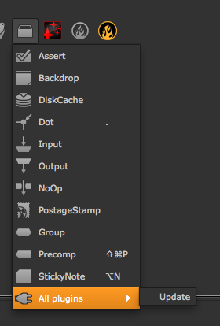
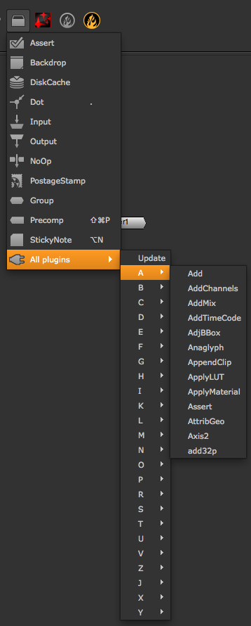
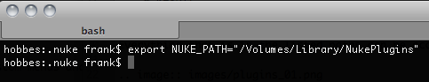
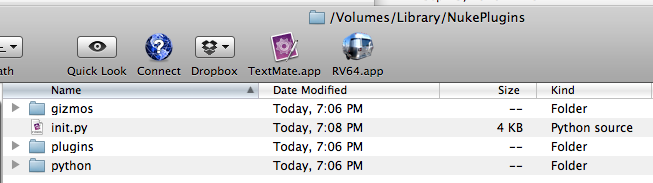
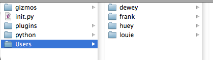
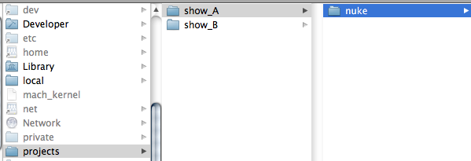

There are a few different ways to install plug-ins, gizmos, and Python scripts so NUKE can see them. The easiest way is to use your home directory’s ~/.nuke folder, which is created the first time NUKE launches. However, this is not feasible in a multi-user environment. In this case, a custom plug-in directory is preferable. You can set one up using the NUKE_PATH environment variable.
Note
It is not a good idea to place custom plug-ins in NUKE’s install directory, as there may be permission and security issues and the plug-ins will not be available across different versions of NUKE.
Here are the details:
On Nukepedia, you can watch a video tutorial about installing plug-ins in the home directory.
As mentioned above, the ~/.nuke directory is created when NUKE launches (if it doesn’t already exist). The path to this directory is added to NUKE’s plug-in path. You can view the plug-in path as follows:
nuke.pluginPath()
# Result:
['/Users/frank/.nuke', '/Library/Application Support/NUKE/6.2/plugins', '/Applications/Nuke6.2v3/NukeX6.2v3.app/../Nuke6.2v3.app/Contents/MacOS/plugins/user', '/Applications/Nuke6.2v3/NukeX6.2v3.app/../Nuke6.2v3.app/Contents/MacOS/plugins/icons', '/Applications/Nuke6.2v3/NukeX6.2v3.app/../Nuke6.2v3.app/Contents/MacOS/plugins']
Everything in the listed directories can be accessed from within NUKE. Without custom UI code in place, you can use the Other > All Plugins > Update option to force load everything in those directories into the Other > All Plugins menu.
 This approach is fine for quick debugging or testing, but is not an acceptable workflow solution. What you want to do once you have your custom gizmo or plug-in in the ~/.nuke directory, is to create a menu.py file, which is automatically run when NUKE launches in interactive mode. Then, create a custom menu item in that file for the new gizmo or plug-in:
nuke.menu( 'Nodes' ).addCommand( 'Other/MyGizmo', lambda: nuke.createNode( 'MyGizmo' ) )
Here, the second MyGizmo is the file name of the custom plug-in or gizmo (for example, ~/.nuke/MyGizmo.gizmo).
A similar approach can be taken with Python scripts. Let’s say you have a file called ~/.nuke/myFunctions.py, which contains a function called doCoolStuff(). You can import the module in your menu.py, then assign the callable to a custom menu item:
import myFunctions
nuke.menu( 'Nuke' ).addCommand( 'My Cool Functions/do cool stuff', myFunctions.doCoolStuff )
To organize custom files better, you can create sub-directories for each type (for example, “gizmos”, “plugins”, “python”, and so on) and add them to NUKE’s plug-in path at start-up:
nuke.pluginAddPath( '.gizmos' )
nuke.pluginAddPath( '.python' )
nuke.pluginAddPath( '.plugins' )
The above code is best placed in a file called init.py, which is automatically read every time NUKE launches (both in interactive and command-line mode). You can use both absolute and relative paths. With the above relative paths saved into a file called ~/.nuke/init.py, after relaunching NUKE, you can run nuke.pluginPath() again to make sure the new directories are now read:
nuke.pluginPath()
# Result:
['/Users/frank/.nuke/.gizmos', '/Users/frank/.nuke/.python', '/Users/frank/.nuke/.plugins', '/Users/frank/.nuke', '/Library/Application Support/NUKE/6.2/plugins', '/Applications/Nuke6.2v3/NukeX6.2v3.app/../Nuke6.2v3.app/Contents/MacOS/plugins/user', '/Applications/Nuke6.2v3/NukeX6.2v3.app/../Nuke6.2v3.app/Contents/MacOS/plugins/icons', '/Applications/Nuke6.2v3/NukeX6.2v3.app/../Nuke6.2v3.app/Contents/MacOS/plugins']
Note that nuke.pluginAddPath prefixes paths to the start of the plug-in path. If you want to append them to the end of the path instead, use nuke.pluginAppendPath. For details, see Evaluation Order.
To use a custom plug-in directory that is shared across a network, you can either use the nuke.pluginAddPath function in each user’s ~/.nuke/init.py file or use the environment variable NUKE_PATH.
Here is how to do that in a bash shell under Linux or Mac OS X:
Then, in NUKE:
nuke.pluginPath()
# Result:
['/Users/frank/.nuke', '/Volumes/Library/NukePlugins', '/Library/Application Support/NUKE/6.2/plugins', '/Applications/Nuke6.2v3/NukeX6.2v3.app/../Nuke6.2v3.app/Contents/MacOS/plugins/user', '/Applications/Nuke6.2v3/NukeX6.2v3.app/../Nuke6.2v3.app/Contents/MacOS/plugins/icons', '/Applications/Nuke6.2v3/NukeX6.2v3.app/../Nuke6.2v3.app/Contents/MacOS/plugins']
Note
The ~/.nuke directory is always at the start of the plug-in path. This way, any default and facility settings can always be overwritten on a per-user basis.
You can now create any sub-directories you may need for organizing your custom tools and use an init.py file to include them in the plug-in path:
From the init.py file:
nuke.pluginAddPath( './gizmos' )
nuke.pluginAddPath( './python' )
nuke.pluginAddPath( './plugins' )
In NUKE:
nuke.pluginPath()
# Result:
['/Users/frank/.nuke', '/Volumes/Library/NukePlugins/gizmos', '/Volumes/Library/NukePlugins/python', '/Volumes/Library/NukePlugins/plugins', '/Volumes/Library/NukePlugins', '/Library/Application Support/NUKE/6.2/plugins', '/Applications/Nuke6.2v3/NukeX6.2v3.app/../Nuke6.2v3.app/Contents/MacOS/plugins/user', '/Applications/Nuke6.2v3/NukeX6.2v3.app/../Nuke6.2v3.app/Contents/MacOS/plugins/icons', '/Applications/Nuke6.2v3/NukeX6.2v3.app/../Nuke6.2v3.app/Contents/MacOS/plugins']
On that level, you can also create user directories where everyone can park their custom code that is only accessible to the author. Let’s say you add a sub-directory called Users for this purpose, which contains sub-directories for each user’s login name:
You can now place the following code in your top level init.py file to check for the current user when NUKE starts up and only include the respective user directory if it exists:
import os
user = os.getenv('USER')
userPath = os.path.join( '/Library/NukePlugins/Users', user )
if os.path.isdir( userPath ):
nuke.pluginAddPath( userPath )
You can also source project-specific tools in the same way. In this example, we assume all show directories live in /projects and we have set an environment variable called SHOW, which tells us the current show’s name. We then look for the /nuke directory inside the current show directory and add that to the plug-in path:
curShow = os.getenv('SHOW')
showPath = os.path.join( '/projects', curShow, 'nuke' )
if os.path.isdir( showPath ):
nuke.pluginAddPath( showPath )
You can now place all the show-specific code in each show’s /nuke directory, and use menu.py and init.py to further define the structure.
If you want to load all the tools for all the shows (it can be quite handy to quickly grab custom tools from another show when you’re in a pinch), you can use code like this:
baseDir = '/projects'
shows = os.listdir( baseDir )
for s in shows:
showPath = os.path.join( baseDir, s, 'nuke' )
if os.path.isdir( showPath ):
nuke.pluginAddPath( showPath )